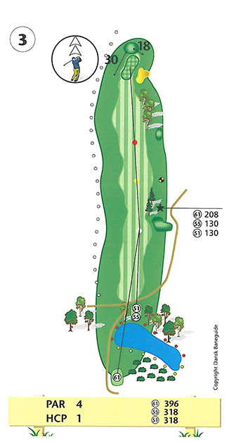

<div class="pages">
  <div data-page="hul3" class="page navbar-fixed toolbar-fixed" >
    <div class="navbar">
      <div class="navbar-inner">
        <div class="left">
          <a href="#" class="link back icon-only"><i class="icon icon-back"></i></a>
          <!-- <a href="#" class="back link icon-only"><i class="icon icon-back"></i></a> -->
        </div>
        <div class="center">Hul 3</div>
        <!-- <div class="right"></div> -->
        <div class="right">
        </div>
      </div>
    </div>
    <div class="page-content" style="padding-top:45px;">
       <div class="content-block">
          <center></center>
          <p>Langt par 4 hul, hvor præcision er speciel vigtig fra gul tee. Udslaget sætter både sø og træer i spil. Træerne presser mange drives til højre, hvor rough, en græshøj og et par velplacerede nåletræer kan gøre andenslaget vanskeligt. Hele venstresiden af hullet er out of bounds, men der er generelt god plads.</p>
          <p>Indspillet bør placeres umiddelbart til venstre for green, da alt skråner til højre på de sidste 40 meter, også green. Herved tages også den dybe bunker til højre for green ud af spil. Endvidere vil indspil kort af pinden give dig et lettere put, da green skråner fra bagkant mod forkant.</p>
          <p>Lav-handicapperen bør tilstræbe et svagt fade i drivet og i øvrigt tilstræbe at placere drivet i fairway ved 150 meter markeringen. Dette vil give dig de bedste muligheder for at angribe pinden.</p>
          <p>Hulsponsor: <br />
          - LEDIGT - <br /><br />
          Bænksponsor:<br />
          - Ingen bænk -<br />
          </p>
        </div>
    </div>
    </div>
    </div>
  </div>
</div>
